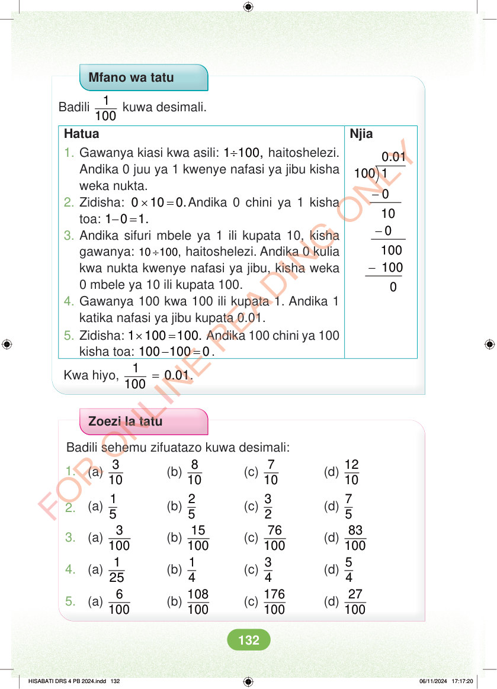

Mfano wa tatu Badili 1 100 kuwa desimali. Njia 0.01 100 1 - - 10 0 - 100 100 Hatua 1. Gawanya kiasi kwa asili: ÷ 1 100, haitoshelezi. Andika 0 juu ya 1 kwenye nafasi ya jibu kisha weka nukta. 2. Zidisha: × = 0 10 0.Andika 0 chini ya 1 kisha toa: - = 1 0 1. 3. Andika sifuri mbele ya 1 ili kupata 10, kisha gawanya: ÷ 10 100, haitoshelezi. Andika 0 kulia kwa nukta kwenye nafasi ya jibu, kisha weka 0 mbele ya 10 ili kupata 100. 4. Gawanya 100 kwa 100 ili kupata 1. Andika 1 katika nafasi ya jibu kupata 0.01. 5. Zidisha: × = 1 100 100. Andika 100 chini ya 100 kisha toa: - = 100 100 0. Kwa hiyo, = 1 0.01 100 . Zoezi la tatu Badili sehemu zifuatazo kuwa desimali: 1. (a) 3 10 (b) 8 10 (c) 7 10 (d) 12 2. (a) 1 5 (b) 2 5 (c) 3 2 (d) 7 3. (a) 3 100 (b) 15 100 (c) 76 100 (d) 83 4. (a) 1 25 (b) 1 4 (c) 3 4 (d) 5 5. (a) 6 100 (b) 108 100 (c) 176 100 (d) 27 HISABATI DRS 4 PB 2024.indd 132 HISABATI DRS 4 PB 2024.indd 132 06/11/2024 17:17:20 06/11/2024 17:17:20